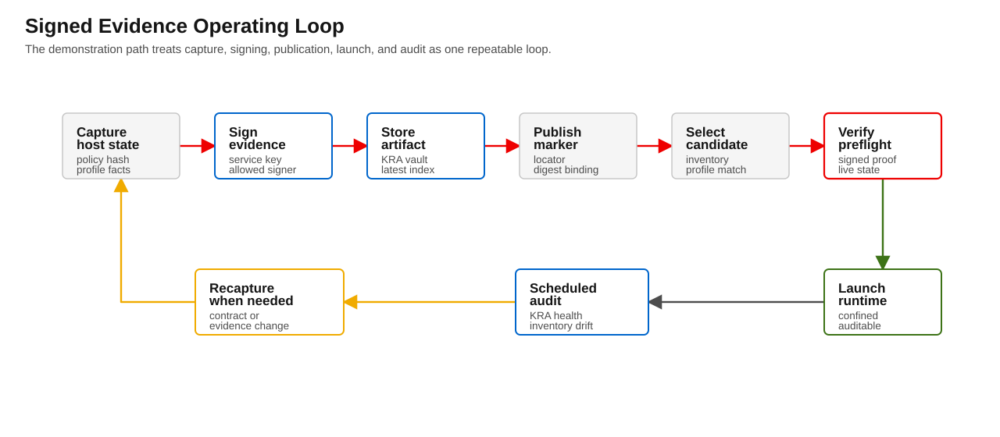
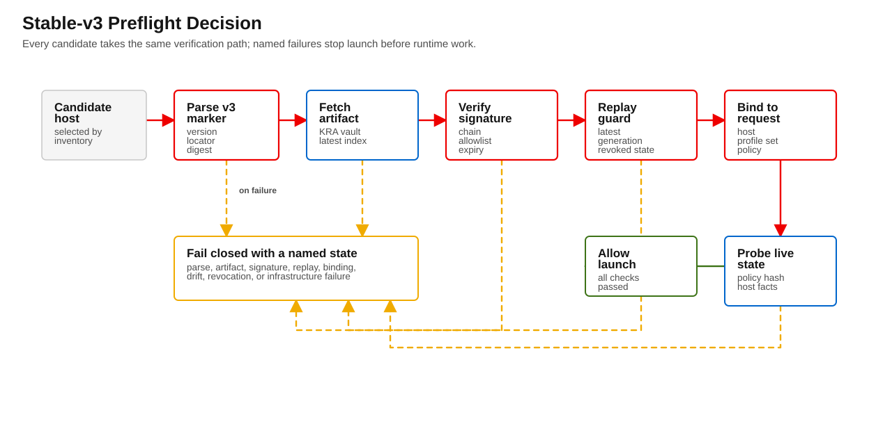

v3 packet
Blastwall v3 Operator Runbook
This runbook gives operators a practical flow for running Blastwall signed attestation as a reference-exemplar operating pattern in the Calabi demonstration environment. It assumes v3 code is already deployed and focuses on interpretation,


Purpose
This runbook gives operators a practical flow for running Blastwall signed attestation as a reference-exemplar operating pattern in the Calabi demonstration environment. It assumes v3 code is already deployed and focuses on interpretation, diagnosis, and safe recovery.
Stable-v3 requires eigenstate.ipa >= 1.18.1. Inventory selection consumes the normalized idm_userclass companion fields, preflight reads the IdM access path through eigenstate.ipa.access_path, classifies sudo expansion through eigenstate.ipa.sudo_risk, checks KRA reachability through eigenstate.ipa.vault_health, and retrieves artifacts through eigenstate.ipa.vault_artifact.
Use docs/blastwall-v3/operational-guidance.md as the controlling guidance for stable-v3 custody, breakglass audit requirements, destructive re-capture triggers, and reference-topology claim boundaries.
Scope
- Read and respond to preflight outcomes for marker-based host gating.
- Drive recovery actions for KRA visibility, attestation, and revocation events.
- Preserve a fail-closed posture for security failures while allowing breakglass only for infrastructure failures.
This runbook is not for changing policy syntax or changing control-plane implementation. Those are separate change tickets.
1) Marker as locator, not proof
In v3, a marker is a locator and selection hint.
- The marker is read early by inventory and used for grouping.
- It points to the attestation artifact by
attest_refandattest_sha256. - Preflight is authoritative: launch proceeds only after parsing, fetching, signature verification, index replay checks, binding checks, and live policy verification (in stable-v3).
If preflight says any host fails, operators should treat that host as untrusted regardless of marker state.
2) Trust boundary and limitations
Current trust assumptions:
- IdM directory and CA remain foundational trust roots.
- AAP and the signer workflow are operationally trusted infrastructure.
- Vault operations must target configured KRA-enabled IdM servers.
Explicit disclosure for this phase:
If the signer is colocated with AAP, this reduces operational complexity but does not provide protection against a full AAP compromise.
This means:
- v3 protects against marker tampering and unsigned evidence confusion.
- It does not add defense in depth against a fully compromised AAP controller that can alter evidence creation.
- breakglass can still be used for attestation infrastructure failures, but not for host verification failures.
- Calabi evidence proves the reference topology path; it does not prove broad RHEL, OpenShift, IdM, AAP, or KRA portability.
3) Required roles
For each run:
- Boundary owner: accountable for policy posture and release intent.
- Incident response owner: coordinates remediation and communication.
- Second maintainer/developer: can run preflight + audit + recovery without handoff.
- Signer owner: manages signer key, certificates, and allowlist.
- KRA/vault owner: owns KRA replica selection and health.
- Revocation authority: can authorize revocation state changes and approvals.
If any role is missing, the operator should halt stable-v3 operation until assigned.
4) Core operating flow
When preflight starts:
- Confirm the branch/variables for the expected mode.
- Confirm
attestation modeandbreakglassvalues match the intended environment. - Let inventory group selection run as normal.
- For each selected host, review verifier output:
- parse success/failure
- marker read and suitability
- attestation fetch
- signature + signer checks
- latest-generation index validation
- binding and live policy checks (stable-v3)
- Classify each failure by failure class and route to the correct playbook.
5) Failure-state decision tree
Start
└─ Marker parse fails?
├─ yes → Parser failure path
└─ no
└─ Marker version?
├─ v1/v2
│ ├─ Mode = transition-v3 → fallback behavior, warning path
│ └─ Mode = stable-v3 → reject
└─ v3
├─ State not suitable (revoked/stale/etc) → reject (unless explicit policy exception)
└─ Suitable
├─ Fetch attestation from configured KRA fails?
│ ├─ yes → infrastructure failure state
│ └─ no
│ ├─ Marker digest mismatch? → reject
│ ├─ Envelope version unsupported? → reject
│ ├─ Signature invalid/untrusted signer? → reject
│ ├─ Index missing or not latest? → reject
│ ├─ Host binding mismatch? → reject
│ ├─ Expired attestation? → reject
│ ├─ Policy hash mismatch on host? → reject
│ └─ all checks pass → allow for launch6) Common failure pages
Missing artifact
- Symptoms: marker exists, attestation not visible.
- Action:
- check vault primary reachability and KRA flags,
- confirm
blastwall_attestation_vault_primarypoints to the same path used by signer, - rerun a targeted health check,
- do not downgrade to stable-v3 without breakglass approval.
Stale index
- Symptoms: latest index indicates generation greater than attestation generation.
- Action:
- treat as replay/no longer current,
- trigger re-run of attestation/signing flow for host.
KRA outage
- Symptoms:
FAIL_INFRA_VAULT_KRAduring stable-v3 preflight,FAIL_KRA_UNAVAILABLEin audit, orFAIL_ATTESTATION_NOT_VISIBLE/FAIL_INDEX_NOT_VISIBLEafter the health gate passes. - Action:
- confirm KRA DNS and pod status,
- inspect the
vault_healthfields forfailure_class,kra_available,vault_reachable, and canary freshness, - confirm canary staleness,
- use breakglass only for infrastructure failure if allowed and justified.
Access path or sudo risk failure
- Symptoms: preflight reports
access_patherrors or high/unknown sudo risk. - Action:
- repair the IdM principal, HBAC rule, sudo rule, or SELinux map;
- remove package-management, policy-management, shell-escape, broad file write, or unconfined sudo expansion from the Blastwall rule;
- use
BLASTWALL_DANGER_ACCEPT_SUDO_RISKonly with a named reason for a temporary transition exception, not as a stable operating default.
Revoked marker
- Symptoms: marker
state=revoked, or revoked index entry. - Action:
- do not launch; perform revocation recovery workflow in the dedicated runbook.
Host drift
- Symptoms: policy or profile mismatch despite valid attestation metadata.
- Action:
- treat as host verification failure,
- repair host (reinstall/align policy), re-run full attestation path.
7) Continuous verification loop
The initial stable-v3 operating loop is installed in AAP with four schedules:
- Hourly KRA health checks.
- Hourly inventory membership audit.
- Daily candidate preflight.
- Daily runtime verification for the candidate group.
Operators should review the latest job output for these fields:
current_hostsstale_hostscurrent_to_stalecurrent_marker_attestation_not_visible_hostscurrent_marker_kra_unavailable_hostsattestation_expiring_soonrevoked_hosts- KRA canary status
Expected response:
- KRA health or canary failure: page the KRA/vault owner and pause stable-v3 launches that require fresh artifact reads.
- Current-to-stale movement: treat as a lifecycle transition that needs owner acknowledgement before the host is selected again.
- Current marker without valid attestation: do not launch the host; rerun signing only after validating the marker and artifact references.
- Candidate preflight or runtime failure: treat preflight as authoritative and preserve the AAP job ID in the evidence ledger.
8) Post-incident evidence requirements
Every major failure must produce:
- host/group,
- failure state,
- command/output timestamp,
- responsible owner,
- action taken,
- final outcome.
These are used by external review and Calabi evidence bundles.